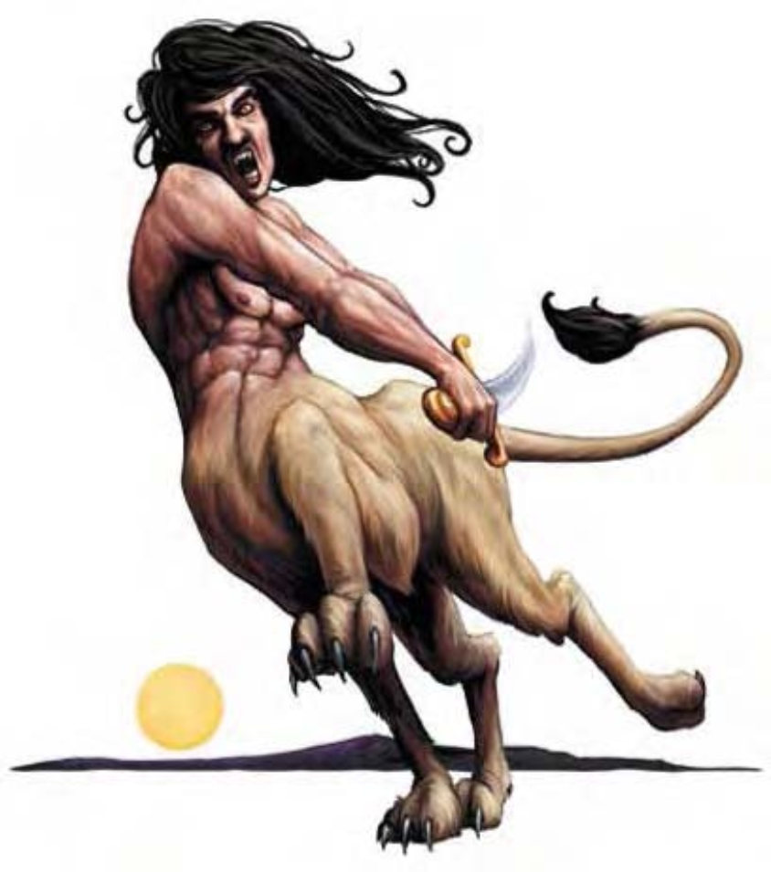

这种生物像是极为美貌的人类与狮子的综合体。从腰部以上看起来像人，以下则是狮子的身体。
人身狮是一种邪恶残酷的生物，以造成他人的痛苦为乐。他们特别喜欢以那些善良阵营的生物为目标。
一般的人身狮身长约8英尺，体重约有700磅。
| 体型/种类 | 大型魔法兽 |
| 生命骰 | 9d10+9 (58HP) |
| 先攻 | +2 |
| 速度 | 60英尺 (12格) |
| 防御等级 | 18 (-1体型、+2敏捷、+7天生)、接触11、措手不及16 |
| 基本攻击/擒抱 | +9 / +17 |
| 攻击 | 接触+12近战 (1d4吸取感知)；或匕首+12近战 (1d6+4 / 19-20)；或爪抓+12近战 (1d4+4) |
| 全力攻击 | 接触+12近战 (1d4吸取感知)；或匕首+12 / +7近战 (1d6+4 / 19-20)；或2爪抓+7近战 (1d4+2) |
| 占据/触及 | 10英尺 / 5英尺 |
| 特殊攻击 | 类法术能力、吸取感知 |
| 特殊能力 | 黑暗视觉60英尺、昏暗视觉 |
| 豁免 | 强韧+7、反射+8、意志+7 |
| 属性 | 力量18、敏捷15、体质12、智力13、感知15、魅力12 |
| 技能 | 唬骗+14、专注+10、交涉+3、易容+1 (扮演+3)、躲藏+11、威吓+3、侦察+11 |
| 专长 | 闪避、钢铁意志、灵活移动、跳跃攻击 |
| 环境 | 温带沙漠 |
| 组织 | 单独、成双或成队 (3-4) |
| 宝藏 | 标准 |
| 阵营 | 通常混乱邪恶 |
| 进化 | 10-13HD (大型)；14-27HD (超大型) |
| 等级修正值 | +4 |
虽然人身狮拥有强大而危险的近战能力，却对堂堂正正的战法没有兴趣。他们会先使用幻术引诱敌人步入险境，接着以从暗处跳跃出来吸取对手的感知。将敌人的精力榨干后，再以附魔能力戏耍那个不幸的家伙。被迫作战的人身狮将用一手握住匕首以及两只狮爪进行攻击。
类法术能力：随意施展――“魔法易容”、“腹语术”；每天3次――“魅惑怪物” (DC=15)、“高等幻影” (DC=14)、“镜影术”、“暗示” (DC=14)；每天1次――“沉睡术” (DC=14)。施法者等级9。豁免检定DC的调整值与魅力调整值相同。
吸取感知 (超自然)：人身狮每次近战接触攻击成功后可吸取1d4点感知。(与一般属性吸取攻击不同的是，人身狮并不会因为吸取感知而增加生命值。) 人身狮会在遭遇前期使用此能力，使敌人易受“魅惑怪物”或“暗示”的影响。
技能：人身狮在进行“唬骗”与“躲藏”检定时具有+4种族加值。